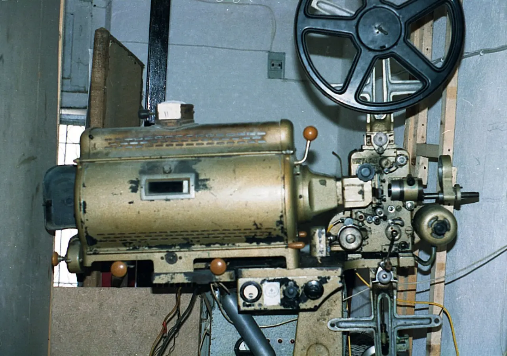

생성형 AI가 영화와 콘텐츠 산업의 중심 이슈로 올라왔습니다. 2026년 칸 영화제와 마켓에서도 AI 제작, 가상 프로덕션, 창작자 권리 논의가 함께 등장했습니다. 기술 시연만 보면 더 적은 비용으로 더 많은 장면을 만들 수 있을 것처럼 보입니다. 그러나 문화 산업에서 중요한 질문은 “만들 수 있나”보다 “누구의 자료로 만들었고, 누구에게 보상해야 하며, 관객에게 어떻게 알려야 하나”입니다.
영화는 수많은 창작자의 노동이 겹친 결과입니다. 작가, 배우, 촬영, 미술, 음악, 편집, 음향, 시각효과가 한 작품 안에 들어갑니다. AI 도구가 이 과정 일부를 돕는 것은 자연스러운 변화일 수 있습니다. 하지만 학습 데이터와 합성 이미지, 배우의 목소리와 얼굴, 작가의 문체가 쓰이는 순간 권리 문제는 피할 수 없습니다. 기술이 빨라질수록 계약과 표시 기준도 같이 빨라져야 합니다.
AI는 제작비보다 권리 질문을 키웁니다

제작사는 AI를 통해 콘셉트 아트, 스토리보드, 배경, 예고편, 자막, 마케팅 이미지를 빠르게 만들 수 있습니다. 독립 제작자에게는 기회가 될 수 있습니다. 그러나 AI가 기존 작품과 배우, 화가, 음악가의 데이터를 학습해 결과물을 만든다면 비용 절감의 이익이 누구에게 돌아가는지 물어야 합니다. 창작자에게 보상 없는 효율은 산업 전체의 신뢰를 깎을 수 있습니다.
권리 문제는 작품이 성공한 뒤 더 커집니다. 개봉 전에는 실험처럼 보였던 AI 활용이 흥행 뒤에는 수익 배분과 명예, 표기 문제로 번질 수 있습니다. 계약서에 AI 사용 범위, 학습 데이터 출처, 2차 활용 권리, 배우와 성우의 디지털 복제 허용 범위가 들어가야 합니다. 기술 도구가 바뀌면 계약 언어도 바뀌어야 합니다.
표시는 관객 신뢰의 문제입니다
관객은 모든 장면의 제작 과정을 알 필요는 없습니다. 하지만 실제 배우의 연기인지, AI로 합성한 얼굴인지, 기록 영상인지, 재현 장면인지 구분이 필요한 경우가 있습니다. 특히 다큐멘터리와 전기 영화에서는 표시 기준이 더 중요합니다. 사실을 다루는 작품에서 AI 재현이 감정만 강화하고 맥락을 흐리면 관객은 속았다고 느낄 수 있습니다.
표시는 창작을 방해하는 규제가 아니라 신뢰를 지키는 안내입니다. “AI를 썼다”는 문장 하나로 충분하지 않을 수 있습니다. 어떤 범위에서 사용했는지, 실제 기록과 합성이 어떻게 구분되는지, 배우나 유족의 동의가 있었는지 설명해야 할 때가 있습니다. 투명한 표시가 있어야 관객은 작품의 의도를 더 정확히 받아들일 수 있습니다.
창작자는 도구와 경쟁하지 않습니다
AI가 들어온다고 창작자가 곧바로 사라지는 것은 아닙니다. 좋은 영화는 장면을 많이 만드는 능력보다 무엇을 남기고 무엇을 덜어낼지 결정하는 감각에서 나옵니다. AI는 후보를 빠르게 만들 수 있지만, 인물의 모순과 리듬, 침묵, 시대의 공기를 설계하는 일은 여전히 사람의 판단이 필요합니다. 문제는 도구가 아니라 도구를 쓰는 방식입니다.
다만 산업 구조가 창작자의 협상력을 약하게 만들 수 있습니다. 제작비 절감이 최우선이 되면 신인 작가와 스태프가 배울 기회가 줄고, 중간 단계의 일자리가 사라질 수 있습니다. 문화 산업은 효율만으로 유지되지 않습니다. 다음 세대 창작자가 현장에서 경험을 쌓고, 권리를 갖고, 실패할 기회를 가져야 오래 갑니다.
플랫폼은 보상 규칙을 먼저 세워야 합니다
AI 콘텐츠가 늘어나면 플랫폼의 책임도 커집니다. AI 생성물 표시, 저작권 침해 신고, 학습 데이터 공개 요구, 수익 배분 기준이 필요합니다. 플랫폼이 빠른 업로드와 조회수만 우선하면 원작자와 관객 모두 불신을 갖게 됩니다. 반대로 명확한 규칙을 세우면 AI 도구는 창작을 돕는 방향으로 자리 잡을 수 있습니다.
UNESCO는 AI가 문화와 창작 생태계에 미치는 영향을 논의하며 문화적 다양성과 창작자 권리, 경제 모델을 함께 봐야 한다고 강조합니다. 문화 산업은 기술 채택이 빠른 만큼 규칙 논의도 빨라야 합니다. 제작비를 줄인다는 이유만으로 권리와 보상을 뒤로 미루면 시장은 커져도 창작 기반은 약해질 수 있습니다.
AI 영화 논쟁은 작품의 완성도만으로 정리되지 않습니다. 어떤 데이터를 학습했는지, 배우의 얼굴과 목소리가 어디까지 허락됐는지, 편집과 미술, 음악 노동의 보상이 어떻게 계산되는지가 함께 걸려 있습니다. 영화제에서 기술 시연이 박수를 받아도 산업 현장의 계약서가 따라오지 않으면 갈등은 커질 수밖에 없습니다. 창작자는 도구를 거부하는 것이 아니라, 도구가 만든 가치가 누구에게 돌아가는지 묻고 있습니다.
관객 입장에서도 기준은 달라집니다. AI로 만든 장면이 들어갔는지보다 그 장면이 서사에 필요한지, 사람이 만든 연기와 미장센을 가볍게 대체하지 않았는지, 제작 과정이 투명하게 공개됐는지가 중요합니다. 문화 산업은 새 기술을 빨리 받아들이지만, 신뢰를 잃으면 흥행의 수명도 짧아집니다. AI 영화가 오래 남으려면 놀라운 화면보다 정당한 권리 처리와 좋은 이야기로 먼저 설득해야 합니다.
플랫폼의 역할도 커집니다. 제작사가 AI 활용 범위를 표시하고, 배우와 작가에게 동의와 보상 구조를 제공하며, 관객에게 어떤 장면이 합성인지 알려 준다면 논쟁은 더 생산적으로 바뀔 수 있습니다. 숨기고 지나가면 의심이 커지고, 과장해서 홍보하면 작품보다 기술이 앞서 보입니다. 영화는 결국 감정의 예술입니다. 관객이 감정을 믿으려면 제작 과정의 신뢰도 함께 필요합니다.
교육 현장도 영향을 받습니다. 영화과와 애니메이션 학과는 이제 카메라와 편집뿐 아니라 데이터 윤리, 저작권 계약, 합성 이미지 검수까지 가르쳐야 합니다. 새로운 도구를 모르면 현장에서 뒤처질 수 있지만, 권리 감각 없이 쓰면 작품 전체가 위험해질 수 있습니다. 창작자의 경쟁력은 AI를 쓰느냐 마느냐보다 어떤 장면에 왜 쓰는지 설명할 수 있는 능력에서 갈릴 가능성이 큽니다.
AI 영화 논쟁은 기술 찬반으로 끝낼 수 없습니다. 필요한 것은 사용 범위, 표시, 동의, 보상, 교육의 기준입니다. AI가 영화의 새 도구가 되려면 관객이 믿을 수 있고 창작자가 계속 일할 수 있는 구조 안에 들어와야 합니다. 좋은 문화 산업은 더 빠른 이미지가 아니라 더 분명한 권리 위에서 오래 갑니다.